Kitchen shelves can completely change the personality of a kitchen. The right shelf decor can make an empty wall feel intentional, add warmth to a plain kitchen, and give your favorite dishes, books, plants, and little treasures a place to shine.
I've always thought kitchen shelves work best when they look collected rather than overly decorated. You want that effortless feeling where someone walks in and thinks, "This kitchen just looks good." Not, "Someone spent three hours arranging that bowl."
The trick comes down to balance. You need enough decor to create personality, but you also need enough empty space to keep the shelves practical.

The Best Kitchen Shelf Decor Mixes Beauty and Function
The most successful kitchen shelf decor ideas don't force you to choose between decoration and practicality.
Your plates can become part of the design. Your cookbooks can add color. Your cutting boards can bring warmth. Your herbs can provide greenery. Your favorite mugs can become a display.
That approach creates a kitchen that feels personal rather than staged.
Open shelving is one of the most personal design elements out there precisely because it puts your life and interests on display. Done well, it tells a story about who you are and what you actually love looking at, which is probably the best way to think about styling your own.
Don't decorate your shelves for Pinterest. Don't decorate them because a showroom tells you that you need twelve matching ceramic objects.
Decorate them with things you actually enjoy seeing every day.
How I Would Style Kitchen Shelves From Scratch
If I started with completely empty shelves, I wouldn't immediately go shopping.
I'd first walk around the house and collect pieces that could work. I'd grab a few favorite cookbooks, ceramic bowls, cutting boards, a vase, a plant, and one or two personal objects.
Then I'd arrange the largest pieces first.
After that, I'd fill the gaps with smaller objects and step back to look at the whole wall.
This last step sounds ridiculously simple, but it helps. You need to see the shelves from a distance because something that looks perfect from two feet away can look completely chaotic from across the kitchen.
And yes, I have rearranged a shelf approximately fourteen times before deciding that the first arrangement looked better.
That's apparently part of the process.
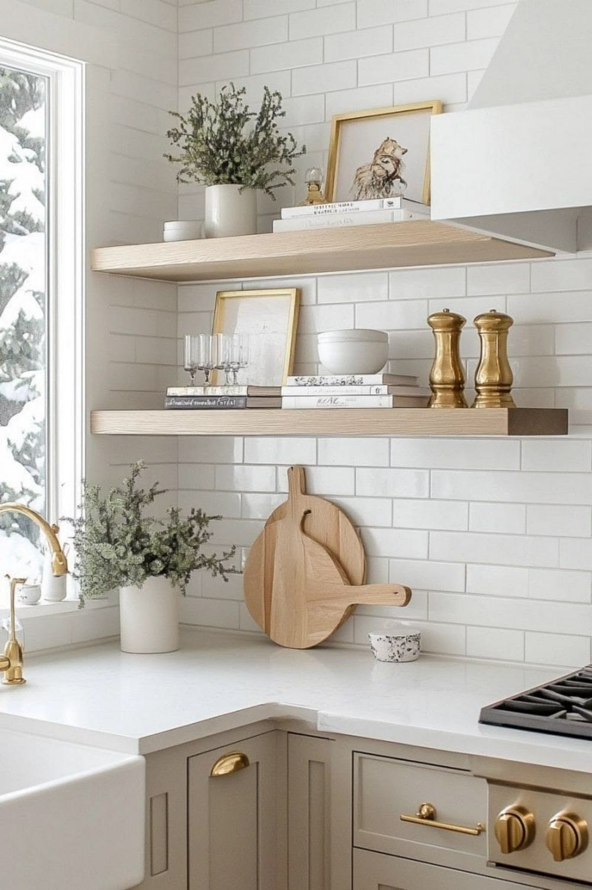
Kitchen Shelf Decor Mistakes to Avoid
Beautiful shelves require editing.
The first mistake involves filling every available inch. When everything competes for attention, nothing gets attention.
The second mistake involves ignoring practicality. If you use something every morning, don't put it on the highest shelf just because it looks good there.
The third mistake involves creating too many unrelated colors. Choose a small palette and repeat those colors throughout the kitchen instead of starting fresh on every shelf.
Open shelving works particularly well for visually pleasing cookware, dishes, and decor, rather than simply maximizing storage.
That distinction matters. Open shelving should display your best-looking everyday items, not become a dumping ground for everything that doesn't fit inside the cabinets.
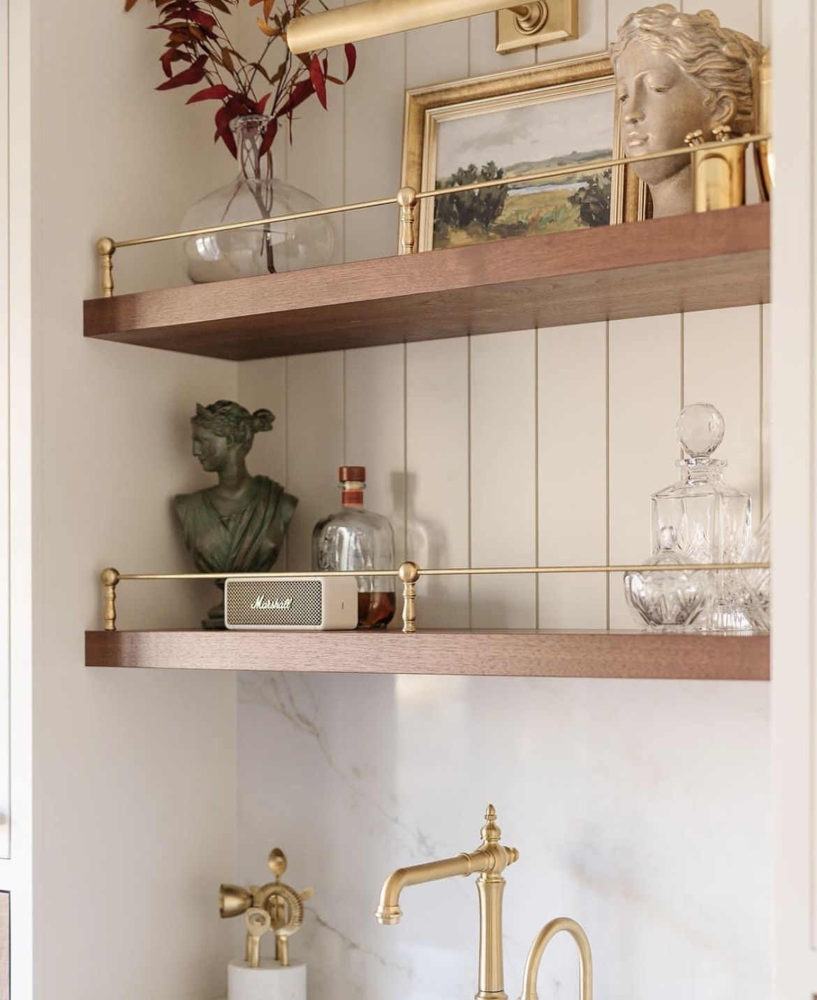
How to Make Kitchen Shelf Decor Look Intentional
Once you choose your pieces, think about visual balance.
If you put three tall objects on one side, balance them with something wider or heavier on the other side. You don't need perfect symmetry, but you do need some visual rhythm.
I also recommend repeating colors throughout the shelves. If you use a muted blue vase on one shelf, bring a little blue into another area with a plate, book, or ceramic piece.
That repetition helps everything feel connected.
Mix Textures
Texture can make a neutral shelf much more interesting on its own.
Combine smooth ceramic with rough wood, woven baskets, glass, metal, and greenery.
You don't need bright colors to create visual interest. Texture can do much of that work by itself.
Vary the Heights
Place tall objects beside short ones rather than lining everything up at the same level.
Try pairing a tall pitcher, a stack of bowls, a small plant, and a horizontal cookbook.
This simple combination creates movement and prevents the shelf from looking like a row of identical objects.
21 Kitchen Shelf Decor Ideas to Try
1. Keep Kitchen Shelf Decor Minimal
Sometimes the best kitchen shelf decor idea involves using less.
Place a few beautiful objects on each shelf and leave plenty of breathing room around them.
There's a real downside to excessive open shelving worth keeping in mind too, the cleaning and clutter demands add up fast. Plenty of designers prefer using open shelving sparingly, since everyday kitchen life can quickly turn a styled shelf into a clutter zone.
So if you're wondering whether you need another vase, another bowl, another little wooden sign, or another decorative jar, the answer might simply be no.
Your shelf will survive.
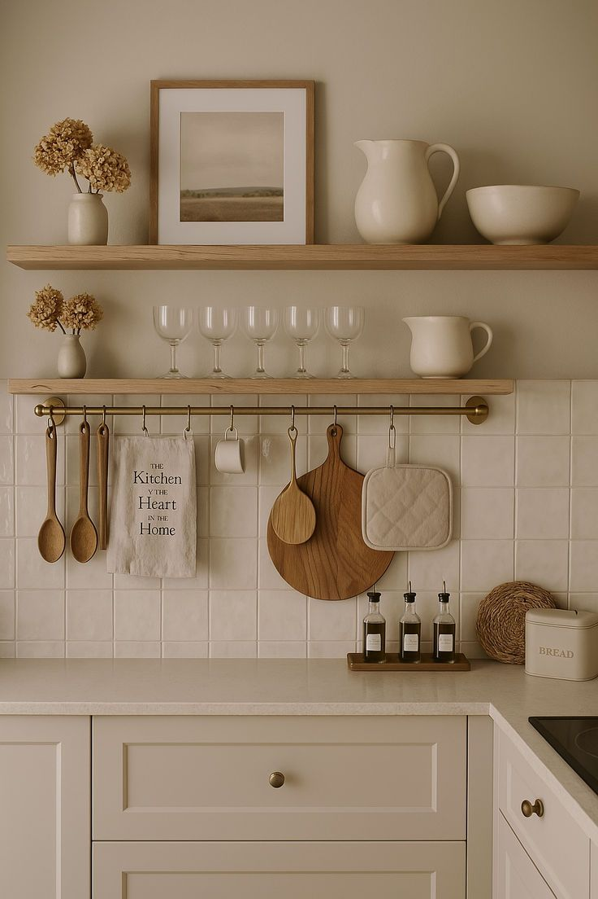
2. Create a Cottage Kitchen Shelf Display
For a cottage-inspired kitchen, embrace slightly imperfect pieces rather than anything too polished.
Mix floral plates, aged wood, ceramic pitchers, small paintings, woven baskets, and fresh greenery.
The goal isn't perfection. You want the shelves to feel like they evolved over time.
That collected quality can make even a brand-new kitchen feel more lived in.
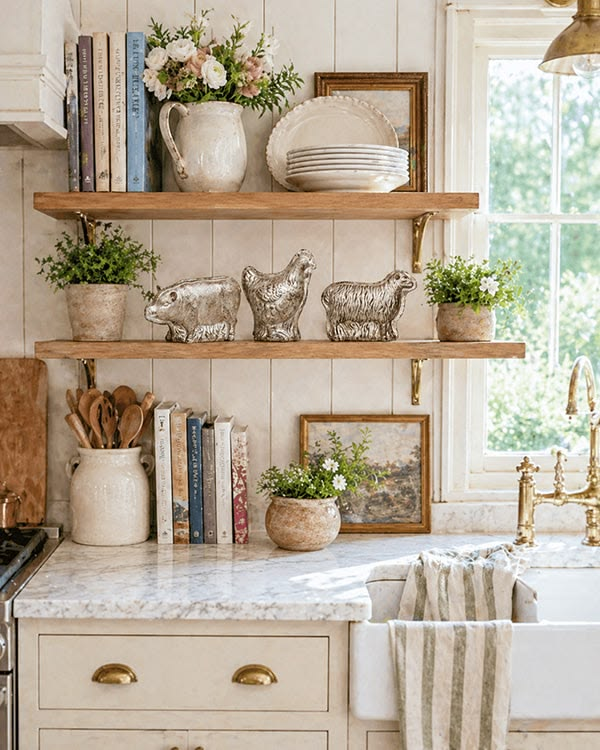
3. Add a Shelf Railing for Character
A small rail along the front of a shelf can add both charm and function at once.
Brass rails work beautifully with warm wood, while black metal can suit industrial or modern kitchens.
A shelf rail is a genuinely practical styling feature too, since it can help keep dishes and decorative objects secure. Unlacquered brass railings on stained wood shelving in particular are a small detail that quietly does a lot of work.
This detail especially suits kitchens where you want a subtle vintage or traditional character.
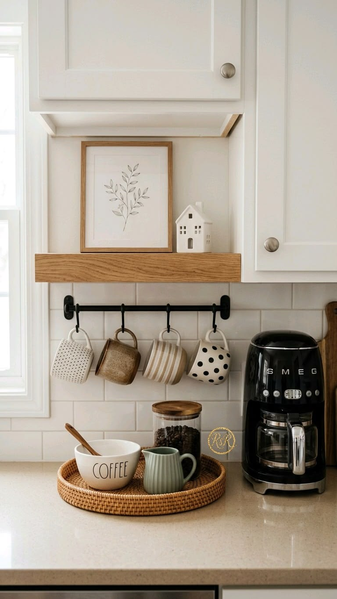
4. Use Baskets for Texture
Woven baskets introduce natural texture and help hide less attractive kitchen items at the same time.
Use them for napkins, tea towels, extra utensils, small pantry items, and reusable bags.
They work particularly well in farmhouse, cottage, coastal, and organic modern kitchens especially.
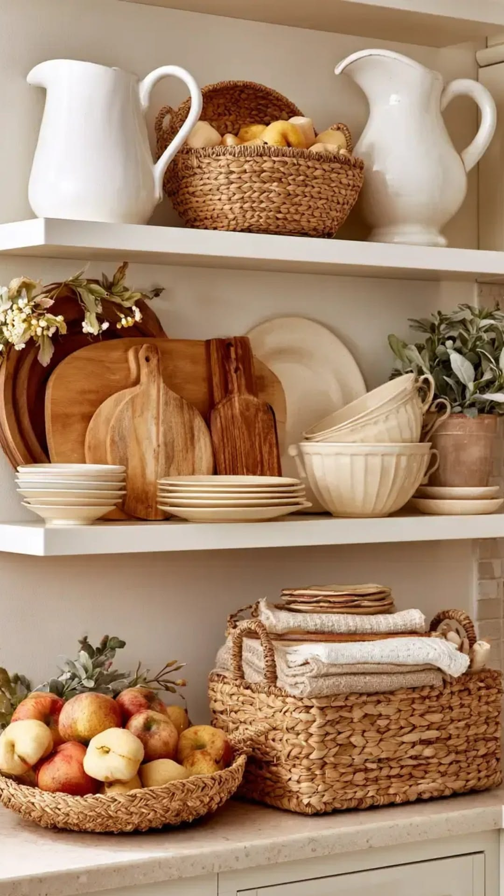
5. Add a Small Mirror
A small mirror can work surprisingly well on a kitchen shelf.
It reflects light and can make a compact kitchen feel brighter. Choose a simple round, arched, or vintage-style frame depending on your kitchen design.
Just keep the mirror relatively small. You want a decorative reflection, not a surprise bathroom moment.
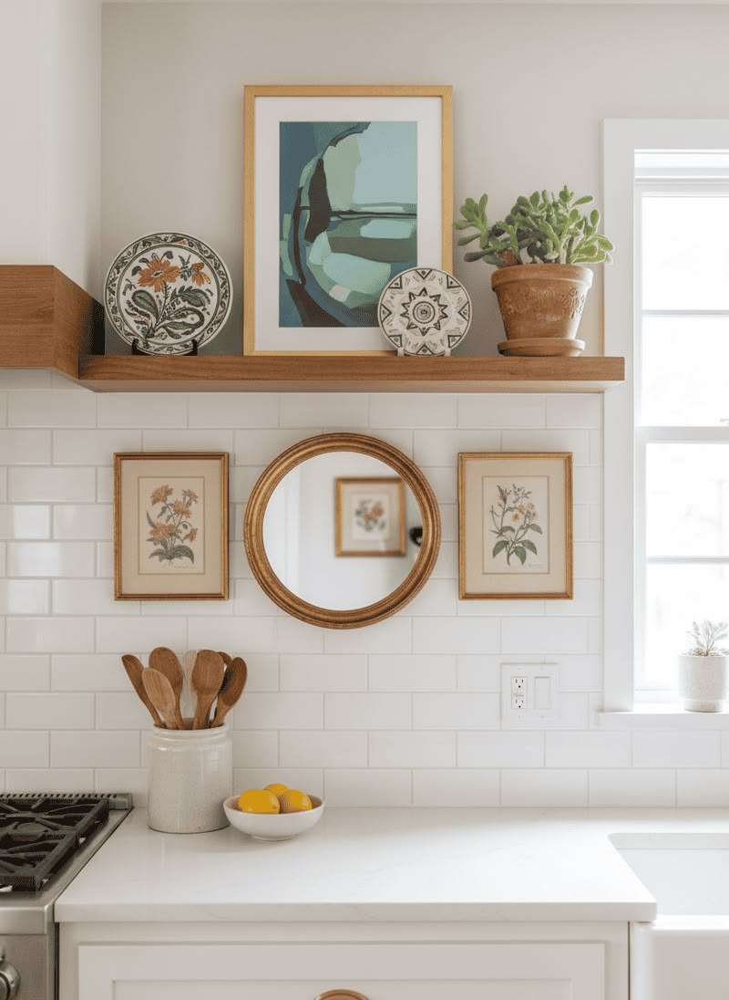
6. Display Pretty Mugs
Mugs deserve more attention than they usually get tucked away in a cabinet.
Choose mugs with interesting handles, textures, or subtle colors and display them together. A row of similar mugs can create a strong visual rhythm on its own.
If you have handmade pottery, this becomes even better, since small variations make the display feel personal.
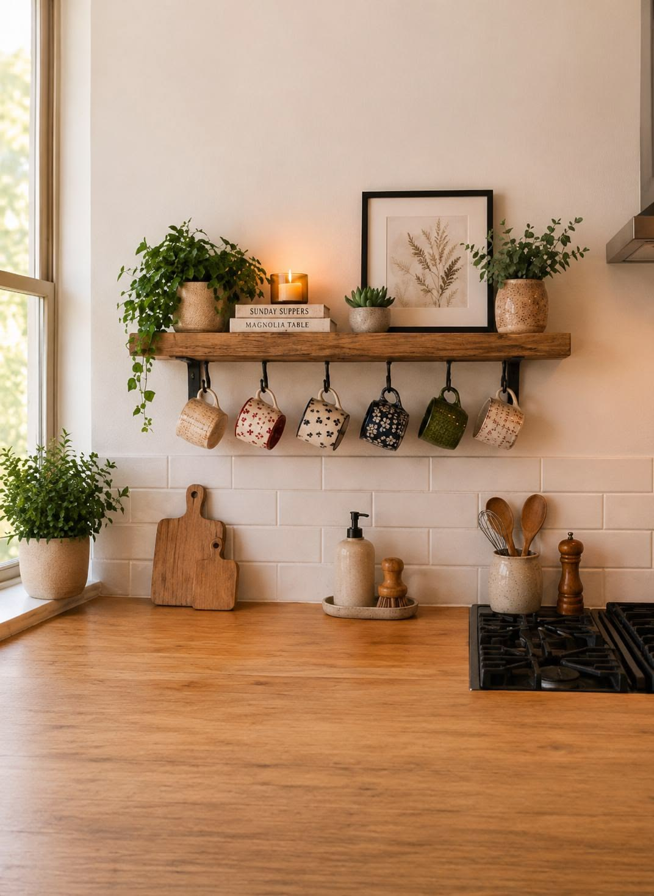
7. Create a Warm Neutral Kitchen Shelf
Warm neutrals work incredibly well in kitchens, almost regardless of the rest of the room.
Try combining cream, beige, warm white, natural wood, soft brown, and muted gray.
This palette works particularly well with popular warm neutral kitchen colors because the shelves blend naturally into the surrounding space.
I often prefer this approach when the cabinets already have a strong color. Instead of adding another competing shade, use the shelves to soften the overall palette instead.
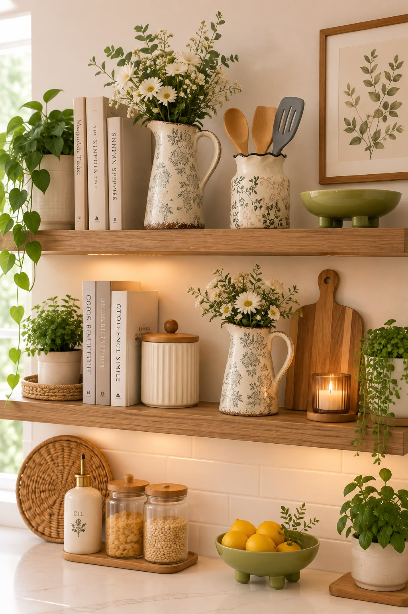
8. Layer Small Artwork Behind Dishes
Here's one of my favorite kitchen shelf decor ideas for adding personality without using much space.
Lean a small artwork or framed print against the wall and place a bowl or vase slightly in front of it.
That creates depth without requiring complicated styling of any kind.
You can repeat the technique on another shelf, but change the height or artwork size so everything doesn't look too symmetrical.
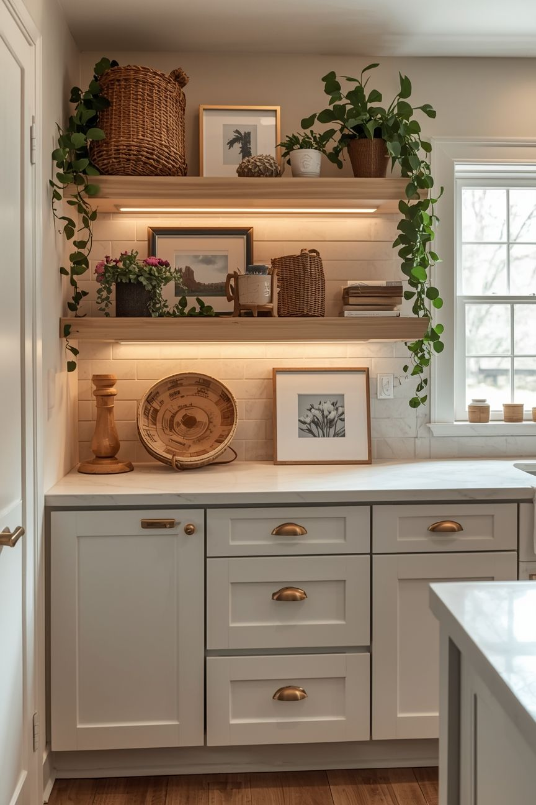
9. Try Open Shelves With a Bold Backdrop
Sometimes the shelf itself doesn't need to carry all the visual interest.
A colorful backsplash, patterned tile, wallpaper, or painted wall can create the background instead.
A visually interesting backdrop, wallpaper, tile, or stone, has a way of instantly elevating open shelving on its own, almost regardless of what's sitting on it.
If you already have a beautiful backsplash, keep the shelf styling simpler and let the wall do some of the work for you.
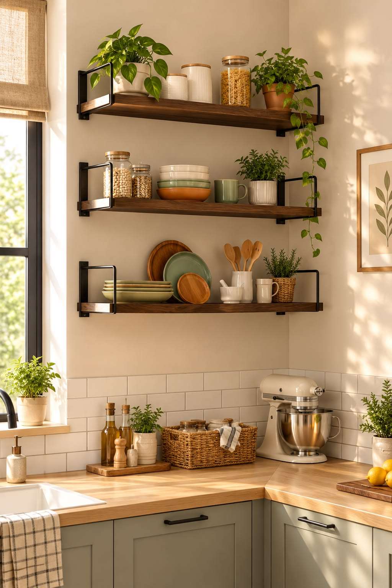
10. Add a Decorative Tray
A tray can bring several small objects together visually instead of letting them scatter.
Place a tray on one section of the shelf and arrange a small vase, salt cellar, candle, or ceramic bowl on top.
This technique prevents tiny objects from looking scattered and makes the arrangement easier to move when you need the shelf for something else.
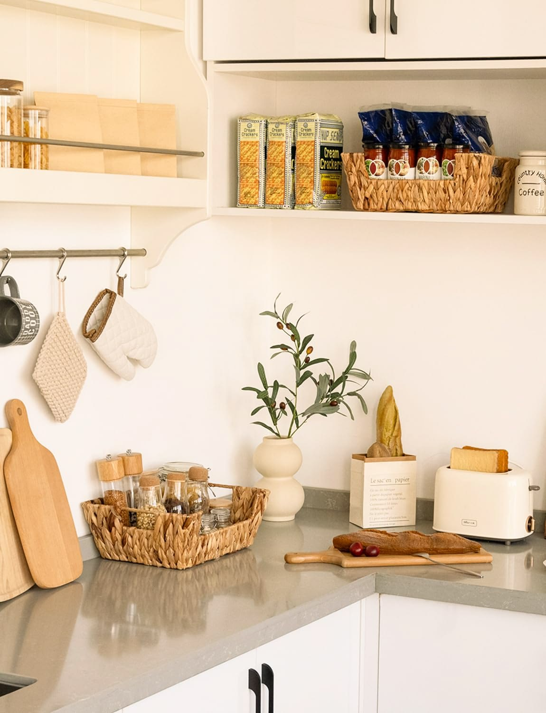
11. Use Glass Jars as Kitchen Shelf Decor
Clear glass jars work beautifully because they combine storage and decoration in one object.
Fill them with pasta, beans, rice, coffee beans, or dried ingredients. Uniform jars create a cleaner appearance, while different shapes give the shelves a more relaxed feel.
If you use open shelves for pantry storage, choose containers that you actually enjoy looking at every day.
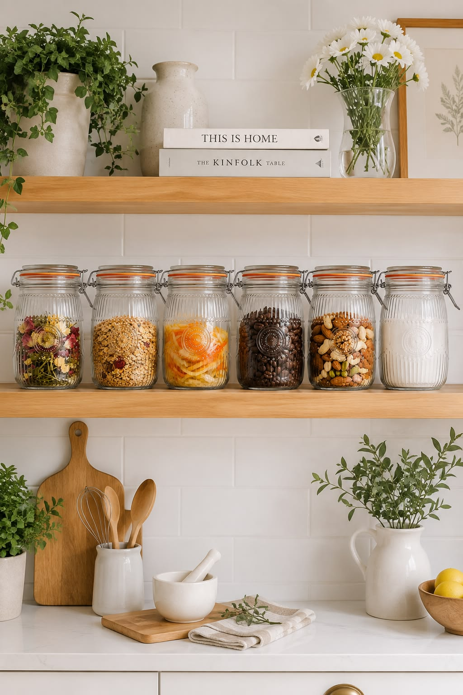
12. Add Vintage Kitchen Finds
Vintage pieces give kitchen shelves personality that new accessories often struggle to create on their own.
Look for old pitchers, enamel containers, brass objects, antique plates, wooden utensils, or interesting pottery.
You don't need an entire vintage collection. One or two pieces can provide enough contrast to make newer objects feel more interesting by comparison.
Using antique china and other collected objects is a reliable way to create a more personal kitchen aesthetic than anything bought new.
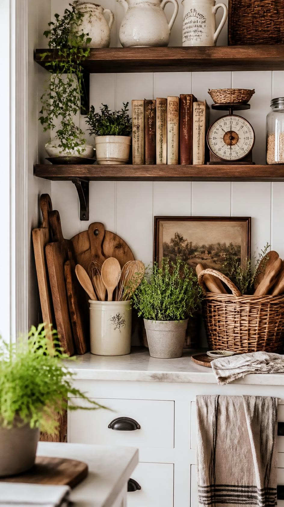
13. Try an All-White Shelf Display
An all-white shelf arrangement can make a kitchen feel incredibly calm almost instantly.
Use white plates, bowls, mugs, pitchers, and ceramics with slightly different textures. The variety prevents the display from looking flat.
This idea works particularly well against darker walls or colorful backsplashes, since the white pieces create real contrast against them.
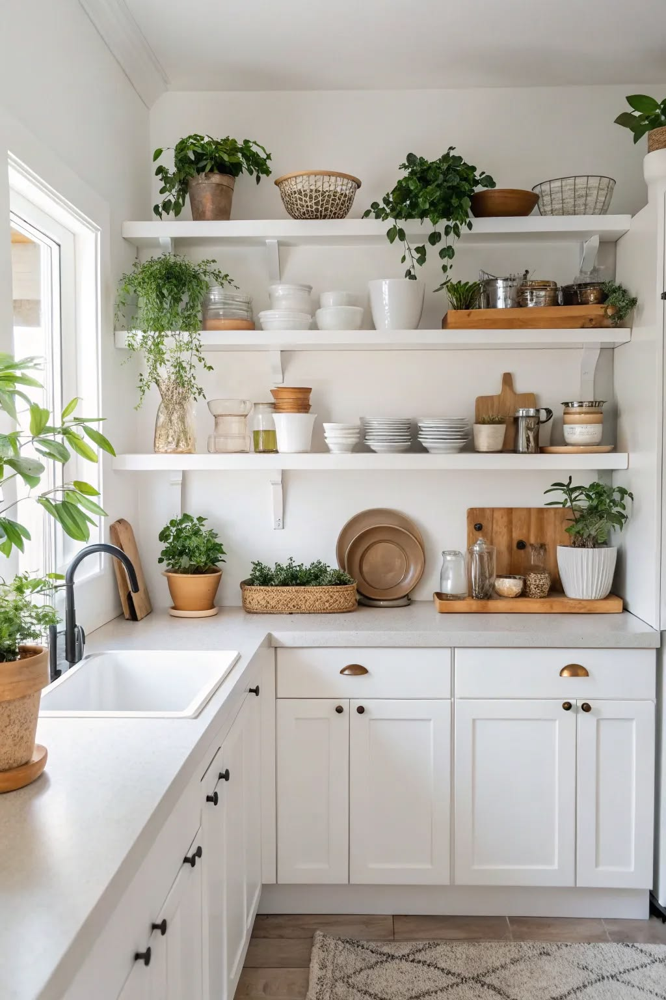
14. Create a Farmhouse Kitchen Shelf Display
For farmhouse kitchens, combine rustic materials with everyday kitchen pieces you already use.
Try wooden cutting boards, white stoneware, woven baskets, vintage jars, ceramic pitchers, and small greenery.
The key is keeping the palette warm and restrained. Too many farmhouse signs and faux-vintage accessories can quickly push the look into "gift shop," which probably isn't the goal.
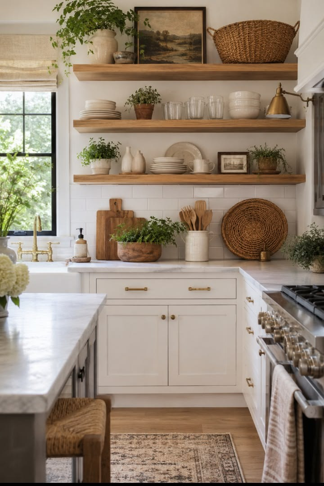
15. Add a Small Piece of Artwork
Who says kitchen shelves only need dishes on them?
A small framed print can completely change the look. Try botanical artwork, an abstract print, vintage food illustrations, or something personal to you.
Displaying art in unexpected places, kitchens included, is a trick worth stealing for exactly this reason.
This idea works especially well when your kitchen already contains plenty of practical objects around it.
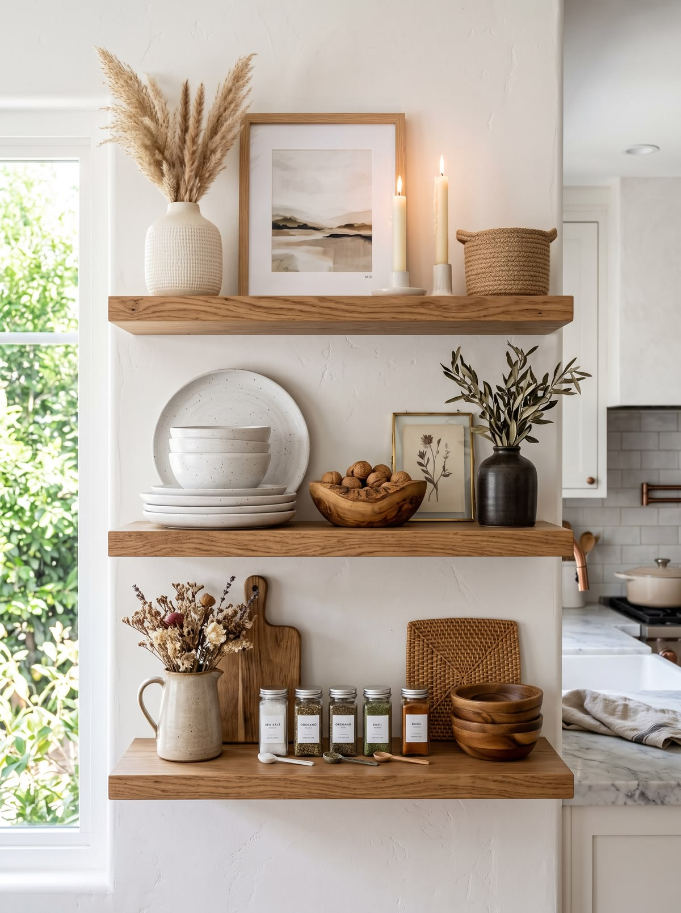
16. Mix Ceramics for Collected Kitchen Shelf Decor
Instead of buying matching ceramics, try mixing similar pieces together instead.
Think cream bowls, handmade mugs, stoneware plates, and small ceramic vases, nothing that matches perfectly.
The slight differences create character. Matching everything can look polished, but too much matching can make your kitchen feel like a showroom instead of a home.
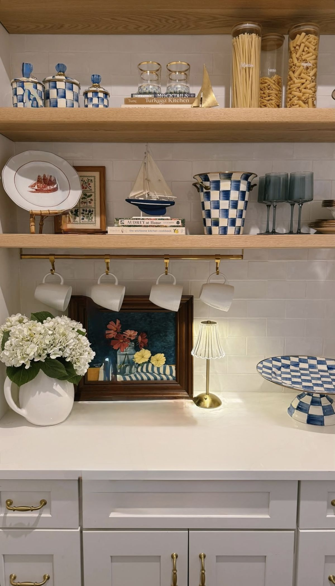
17. Display Your Favorite Cookbooks
Cookbooks instantly tell people that your kitchen actually gets used.
Stack two or three horizontally and place a small decorative object on top. You can also stand a few books vertically and lean one against them.
Try choosing books with covers that complement your kitchen color palette. You don't need to coordinate every color perfectly. Just avoid creating a rainbow explosion unless that's genuinely your style.
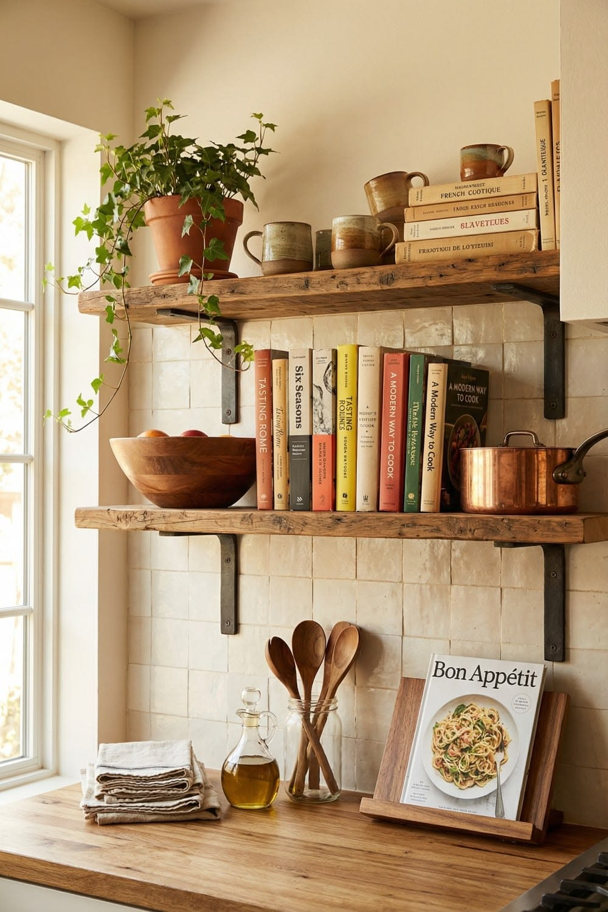
18. Use Small Plants and Fresh Herbs
Plants instantly soften hard kitchen materials like tile, stone, metal, and cabinetry.
Try trailing plants, small potted herbs, or simple greenery in ceramic pots. Basil, rosemary, thyme, and mint can add both color and function at once.
Finding a permanent place for fresh flowers or herbs is one of those small habits that pays off constantly, bringing real life into a kitchen space in a way almost nothing else does.
If you cook regularly, herbs offer one of those rare decorating tricks that actually earns their shelf space.
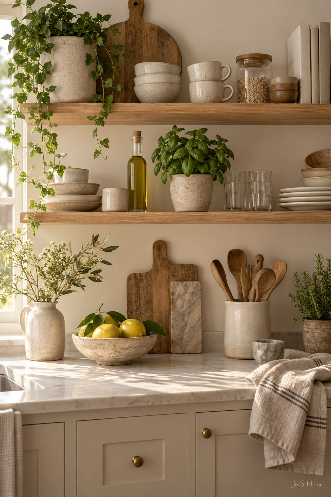
19. Create a Coffee Station on Your Kitchen Shelves
If you love coffee, give it its own little corner instead of scattering the supplies across the counter.
Display your favorite mugs, coffee beans in attractive containers, a small framed print, and perhaps a tiny plant. You can even add a wooden tray to visually connect everything together.
This works particularly well on lower shelves where you can easily grab everything in the morning without reaching.
And yes, I consider coffee a decorating accessory. I make the rules here.
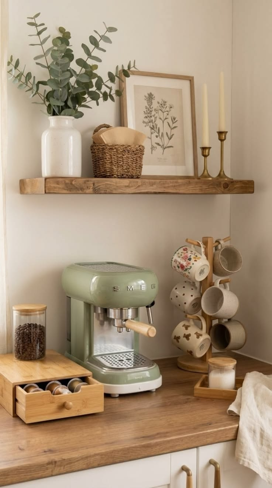
20. Add Wooden Cutting Boards
Wooden cutting boards make excellent kitchen shelf decorations because they add warmth while remaining completely functional.
Lean two or three boards against the wall and vary their sizes. Look for different wood tones if your kitchen already has natural materials elsewhere.
The combination of wood, ceramics, and stone can make a kitchen feel noticeably warmer overall.
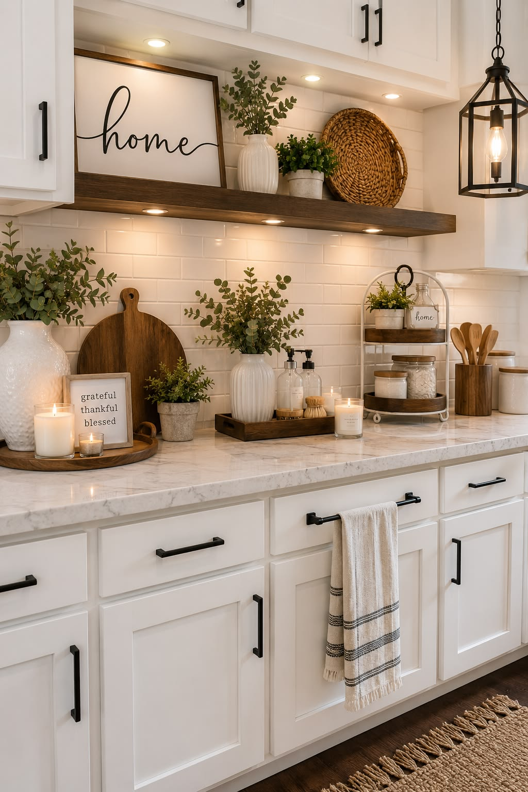
21. Stack Neutral Plates for Simple Kitchen Shelf Decor
Finish with something incredibly easy: stacks of plates.
Choose plates in similar tones and stack them in groups rather than spreading individual plates across the shelf. White, cream, beige, warm gray, and soft taupe work particularly well if you want a calm kitchen.
I especially like this idea for neutral kitchen shelf decor, since the repeated shapes create visual consistency without making the shelves boring to look at.
You can place a small bowl, vase, or decorative object beside the stack to break up the repetition a little.
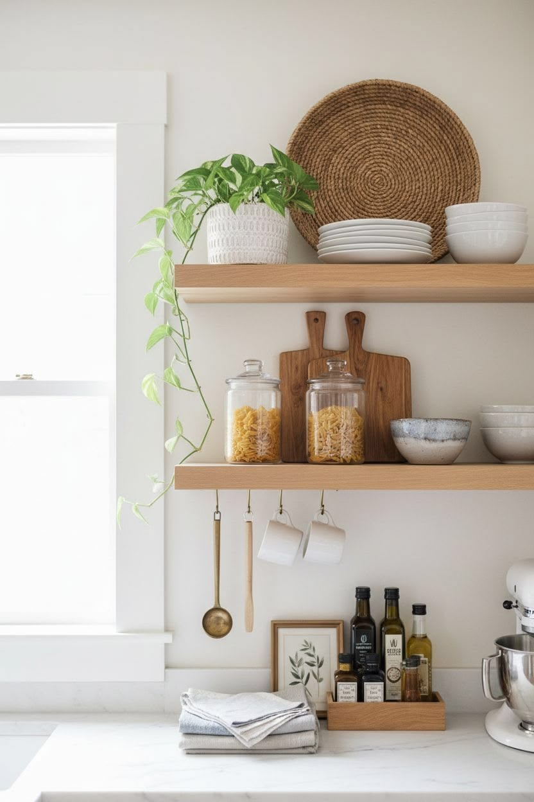
What Should You Put on Kitchen Shelves?
The best kitchen shelf decor usually combines different heights, textures, shapes, and practical objects.
You don't need twenty different accessories. A few carefully chosen pieces can create much more impact than a crowded shelf ever could.
I usually think about a shelf in layers: something tall, such as a vase or framed artwork; something horizontal, such as stacked books or plates; something functional, such as mugs or bowls; something organic, such as herbs or greenery; and something personal, such as pottery or a vintage object.
Reusing pieces you already own beats automatically buying new accessories every time, it's basically shopping your own closet. Restyling shelves this way is one of the cheapest, easiest ways to update a home.
That approach works especially well in kitchens because everyday objects already come with texture and personality built in.
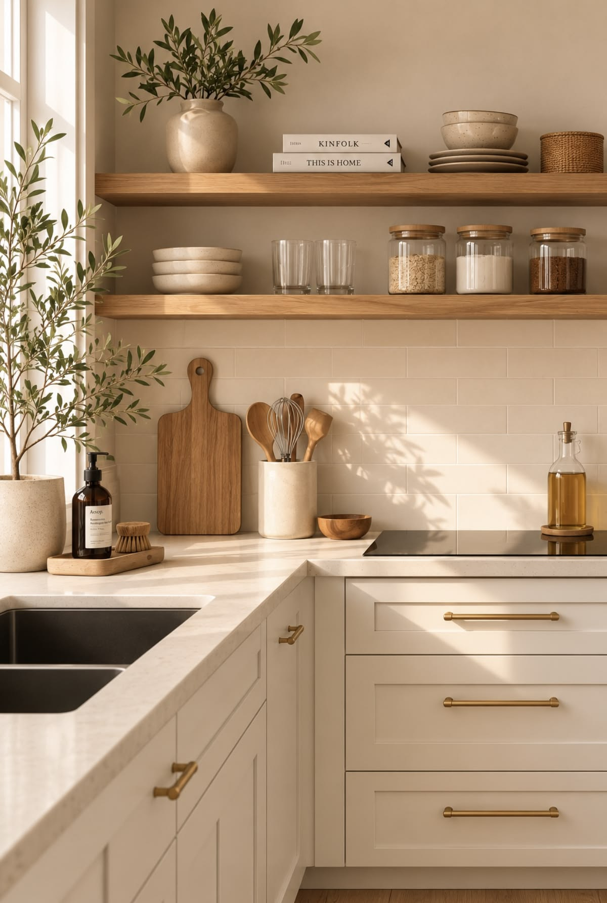
Think About Function First
Kitchen shelves still need to function as kitchen shelves above everything else.
Before styling them, think about what you reach for every day. Plates, bowls, mugs, glasses, cutting boards, and cookbooks can all become part of the decor instead of competing with it.
This approach also makes styling much easier because you already own most of what you need.
And honestly, why buy another decorative vase when your favorite coffee mugs are sitting inside a cabinet looking lonely?
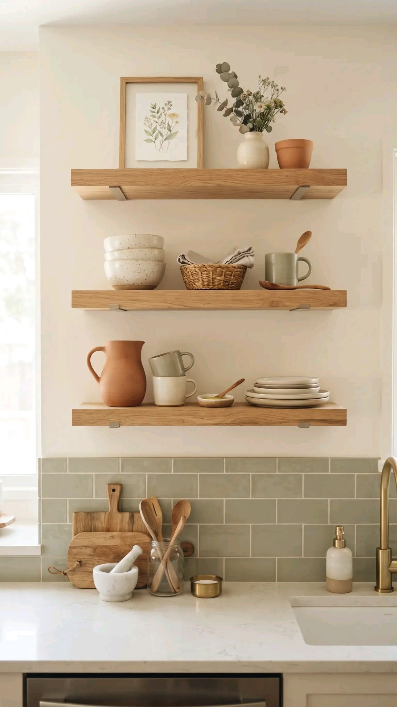
How Do You Decorate Kitchen Shelves Without Making Them Look Cluttered?
The biggest mistake I see with kitchen shelves involves treating every inch of space like it needs something. It doesn't. Negative space matters just as much as the objects you display.
I like to start with the pieces I actually use or genuinely love. Then I add a few decorative elements around them rather than buying a collection of random objects just because they look cute online.
Meaningful pieces tend to create a more collected kitchen than random accessories bought just to fill space. One designer approach I particularly like involves using a client's own antique urns and china to add personality to open pastry shelving, styling with pieces that actually mean something to the people living there beats styling with whatever happens to be trending that month.
That idea has stuck with me. If you have a beautiful ceramic bowl from a trip, an old cookbook from your grandmother, or a handmade vase you actually love, start there.
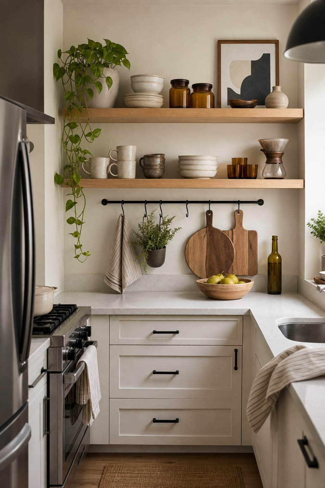
Final Thoughts on Kitchen Shelf Decor
The right kitchen shelves can add warmth, personality, storage, and visual interest without requiring a complete kitchen makeover.
Start with functional pieces. Add natural textures, greenery, artwork, cookbooks, ceramics, and a few personal finds. Keep your color palette connected, vary the heights, and leave enough empty space for everything to breathe.
Most importantly, edit your shelves instead of constantly adding to them.
A beautiful kitchen shelf doesn't need to look perfect. It just needs to look intentional.
So grab your favorite mug, move that vase three inches to the left, and see what happens. Your kitchen might already have everything it needs to look fantastic.